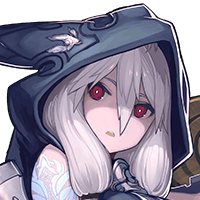

だから俺がその魔神は破壊したって 言ってるだろーが！
ルジーナ
その魔神は俺が すでに倒しちまってるんだからな。
ヴェルナー
ふざけんな！ お前が倒した方が偽物だろーが！


ルジーナだけでなく私も協力している。 あの魔神は本物だ。
あの…私もShou-chanさんと一緒に 確かに魔神を倒しました。
パリス
つまり、すべての場所で魔神が現れ それぞれが倒したといことね。
ルジーナ
パリス、テメー俺のことを 信じてねーな……。
パリス
あなたを信じるとか信じないとか そんな問題じゃないのよ。
パリス
それにどれが偽物でどれが本物でも 目的が達せられれば関係無いわ。
ユニ
魔神を倒したが状況が 変わっていないということ。
パリス
魔神を倒したにも関わらず、 あなたたちに変化は無いわ……。
フィーナ
つまり、私たちが元の世界に戻る方法が 完全にわからなくなったってことですか？
パリス
はっきりとは言えないけど その可能性は高いわ……。
フィーナ
ヴェルナーさん、ユニさん、 どうしましょう！
ユニ
焦る必要は無い。 ゆっくり他の方法を探せばいい。
ユニ
倒した魔神がすべて偽物だった 可能性もある。
ヴェルナー
だったら本物に当たるまで 全部、破壊しちまえばいいだけだ！
ヴェルナー
そう言えば、お前との決着がまだだったな。 先にお前を破壊し尽くしてやるよ。
ルジーナ
上等だ。 犬は犬らしく俺にしつけられてな。
フィーナ
ユニさん、ヴェルナーさんを 止めてください！
ルジーナ
ケッ、そんなことは召喚院のお偉いさん方が 考えればいいんだよ。
ルジーナ
どうせ、裏で召喚老も 動いてるんだろうからよ。
ルジーナ
Shou-chan！ テメーはボーっとしてないで動いてろ！
ルジーナ
お前が動いてれば何かが 起きるかもしれねーんだからな。
フィーナ
Shou-chanさん、すみませんが、 もう少しお付き合いください。
フィーナ
きっと向こうは向こうで 私たちの仲間が戦っているはずです。
フィーナ
だから、私たちもこちらでできることを １つでも多くやっておきたいんです！
パリス
フフッ、フィーナさんは仲間を 信頼してるのね。
グラデンス
どうやら問題はこちら側だけでは ないようじゃな。
グラデンス
まあ、あちら側での事象が解決すれば こちらにも動きがあるじゃろう。


{kind=link}
{kind=link}
{kind=link}
{kind=link}
{kind=link}
{kind=link}
{kind=link}